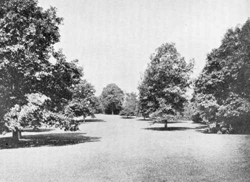

Chapter VIII. The Beautiful In Ground
Description
This section is from the book "Landscape Gardening", by Andrew Jackson Downing. Also available from Amazon: Landscape Gardening.
Chapter VIII. The Beautiful In Ground
WE have sketched, elsewhere, the elements of the beautiful in a tree. Let us glance for a few moments at the beautiful in ground. We may have readers who think themselves not devoid of some taste for nature, but who have never thought of looking for beauty in the mere surface of the earth, whether in a natural landscape, or in ornamental grounds. Their idea of beauty is, for the most part, attached to the foliage and verdure, the streams of water, the high hills and the deep valleys, that make up the landscape. A meadow is to them but a meadow, and a ploughed field is but the same thing in a rough state. And yet there is a great and enduring interest, to a refined and artistic eye, in the mere surface of the ground. There is a sense of pleasure awakened by the pleasing lines into which yonder sloping bank of turf steals away from the eye, and a sense of ugliness and harshness, by the raw and broken outline of the abandoned quarry on the hillside, which hardly any one can be so obtuse as not to see and feel. Yet the finer gradations are nearly overlooked, and the charm of beautiful surface in a lawn is seldom or never considered in selecting a new site or improving an old one.
We believe artists and men of taste have agreed that all forms of acknowledged beauty are composed of curved lines; and we may add to this, that the more gentle and gradual the curves, or rather the farther they are removed from those hard and forcible lines which denote violence, the more beautiful are they. The principle applies as well to the surface of the earth as to other objects. The most beautiful shape in ground is that where one undulation melts gradually and insensibly into another. Every one who has observed scenery where the foregrounds were remarkable for beauty, must have been struck by this prevalence of curved lines; and every landscape gardener well knows that no grassy surface is so captivating to the eye, as one where these gentle swells and undulations rise and melt away gradually into one another. Some poet, happy in his fancy, has called such bits of grassy slopes and swells, "earth's smiles;" and when the effect of the beauty and form of outline is heightened by the pleasing gradation of light and shade, caused by the sun's light, variously reflected by such undulations of lawn, the simile seems strikingly appropriate. With every change of position the outlines vary, and the lights and shades vary with them, so that the eye is doubly pleased by the beauty of form and chiaro-oscuro, in a lawn with gracefully undulating surface.
* Original date of March, 1852.
Fig. 29. A Beautifully Shaped Lawn.
A flat or level surface is considered beautiful by many persons, though it has no beauty in itself. It is, in fact, chiefly valued because it evinces art. Though there is no positive beauty in a straight or level line, it is often interesting as expressive of power, and we feel as much awed by the boundless prairie or desert, as by the lofty snow-capped hill. On a smaller scale, a level surface is sometimes agreeable in the midst of a rude and wild country by way of contrast, as a small, level garden in the Alps will sometimes attract one astonishingly, that would be passed by, unnoticed, in the midst of a flat and cultivated country.
Hence, as there are a thousand men who value power, where there is one who can feel beauty, we see all ignorant persons who set about embellishing their pleasure-grounds, or even the site for a home, immediately commence levelling the surface. Once brought to this level, improvement can go no further, according to their views, since to subjugate or level, is the whole aim of man's ambition. Once levelled, you may give to grounds, or even to a whole landscape, according to their theory, as much beauty as you like. It is only a question of expense.
This is a fearful fallacy, however; fearful, often Limes, to both the eye and the purse. If a dead level were the thing needful to constitute beauty of surface, then all Holland would be the Arcadia of landscape painters; and while Claude, condemned to tame Italy, would have painted the interior of inns, and groups of boors drinking (vide the Dutch School of art), Teniers, living in the dead level of his beautiful nature, would have bequeathed to the world pictures of his native land, full of the loveliness of meadows smooth as a carpet, or enlivened only by pollard willows and stagnant canals. It is not the less fearful to see, as we have often seen in this country, where new places are continually made, a finely varied outline of ground utterly spoiled by being graded for the mansion and its surrounding lawn, at an expense which would have curved all the walks, and filled the grounds with the finest trees and shrubs, if their surface had been left nearly or quite as nature formed it. Not much better, or even far worse, is the foolish fancy many persons have of terracing every piece of sloping ground, as a mere matter of ornament, where no terrace is needed. It may be pretty safely said that a terrace is always ugly unless it is on a large scale and is treated with dignity so as to become part of the building itself, or more properly be supposed to belong to it than to the grounds, like the fine, architectural terraces which surround the old English mansions. But little gardens thrown up into terraces, are devoid of all beauty whatever, though they may often be rendered more useful or available in this way.
The surface of ground is rarely ugly in a state of nature, because all nature leans to the beautiful, and the constant action of the elements goes continually to soften and wear away the harshness and violence of surface. What cannot be softened, is hidden and rounded by means of foliage, trees and shrubs, and creeping vines, and so the tendency to the curve is always greater and greater. But man often forms ugly surfaces of ground, by breaking up all natural curves, without recognizing their expression, by distributing lumps of earth here and there, by grading levels in the midst of undulations, and raising mounds on perfectly smooth surfaces; in short, by regarding only the little he wishes to do in his folly, and not studying the larger part that nature has already done in her wisdom. As a common though accidental illustration of this, we may notice that the mere routine of tillage on a farm, has a tendency to destroy natural beauty of surface by ridging up the soil at the outsides of the field and thus breaking up that continuous flow of line which delights the eye.
Our object in these remarks is simply to ask our readers to think in the beginning, before they even commence any improvements on the surface of ground which they wish to embellish — to think in what natural beauty really consists, and whether in grading, they are not wasting money, and losing that which they are seeking. It will be better still, if they will consider the matter seriously, when they are about buying a place, since, as we have before observed, no money is expended with so little to show for it, and so little satisfaction, as that spent in changing the original surface of the ground.
Practically the rules we would deduce are the following: To select, always, if possible, a surface varied by gentle curves and undulations. If something of this character already exists, it may often be greatly heightened or improved at little cost. Very often, too, a nearly level surface may, by a very trifling addition, only adding a few inches in certain points, be raised to a character of positive beauty, by simply following the hints given by nature.
When a surface is quite level by nature, we must usually content ourselves with trusting to planting, and the arrangement of walks, buildings, etc., to produce beauty and variety; and we would always, in such cases, rather expend money in introducing beautiful vases, statues, or other works of positive artistic merit, than to terrace and unmake what character nature has stamped on the ground.
Positively ugly and forbidding surfaces of ground, may be rendered highly interesting and beautiful, only by changing their character, entirely, by planting. Such ground, after this has been done, becomes only the skeleton of the fair outside of beauty and verdure that covers the forbidding original. Some of the most picturesque ravines and rocky hillsides, if stripped entirely of their foliage, would appear as ugly as they were before beautiful; and while this may teach the improver that there is no situation that may not be rendered attractive, if the soil will yield a growth of trees, shrubs, and vines, it does not the less render it worth our attention in choosing or improving a place, to examine carefully beforehand, in what really consists the beautiful in ground, and whether we should lose or gain it in our proposed improvements.
Continue to:
- prev: Chapter VII. The Philosophy Of Rural Taste
- Table of Contents
- next: Chapter IX. The Beautiful In A Tree